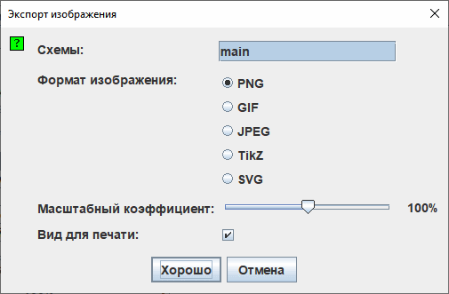

Экспорт изображений
Когда вы выбираете Экспортировать | изображение... |, Logisim отображает диалоговое окно с четырьмя настройками.

Настройка экспорта
- Схемы: Список, где вы можете выбрать одну или несколько схем, которые должны быть экспортированы в файлы изображений. (Пустые схемы не отображаются как варианты).
- Формат изображения: Вы можете создавать PNG, GIF, JPEG, TikZ и SVG файлы. Я бы порекомендовал PNG файлы: формат GIF довольно устаревшей, а формат JPEG внесёт артефакты в изображение, так как формат JPEG вообще-то предназначен для фотографических изображений.
- Масштабный коэффициент:с помощью этого ползунка вы можете изменять масштаб изображений, в котором они сохраняются в файлы.
- Вид для печати: Изменяет стиль создаваемого изображения, используя информацию о состоянии или только схему.

Эта опция также доступна в "настройках приложения" на вкладке "Макет". Это изменит отображение в рабочей области.
После нажатия хорошо Logisim покажет диалоговое окно выбора файла. Если вы выбрали одну схему, выберите файл, в который изображение должно быть помещено. Если вы выбрали несколько схем, выберите директорию, куда файлы должны быть помещены; Logisim назовёт изображения, основываясь на названиях схем (main.png например).